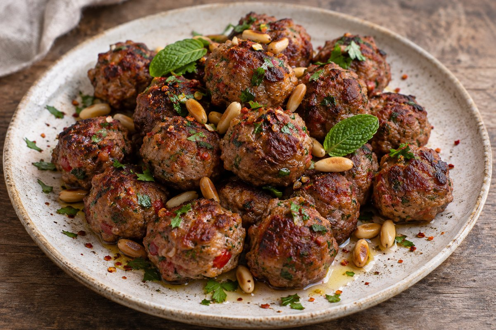

Kofta mit Pinienkernen und Kräutern

Kleine Rindfleischbällchen mit Zwiebel, Tomate, Petersilie und Chili, dazu geröstete Pinienkerne und Kräuter.
Zutaten
Für die Kofta
- 500 g Rindfleisch (in der Vorlage nicht näher spezifiziert)
- 1 kleine Zwiebel, geschält und grob gerieben (120 g)
- 1 große Tomate, gehäutet und grob gerieben (65 g laut Vorlage)
- 20 g Petersilie, fein gehackt
- 1 rote Chilischote, entkernt und fein gehackt
- Ca. 45 ml Olivenöl zum Braten
- 1 TL Salz (im Zubereitungstext genannt)
- Reichlich frisch gemahlener schwarzer Pfeffer
Für das Topping
- 1 EL Olivenöl
- 25 g Pinienkerne
- 5 g Petersilie, grob gehackt
- ½ TL Aleppo-Chiliflocken oder ¼ TL gewöhnliche Chiliflocken
- 1 Handvoll Minzblätter, nach Wunsch
- Einige Tropfen Olivenöl zum Abschluss (im Zubereitungstext genannt)
Zubereitung
- Die Zutaten für die Fleischbällchen außer dem Olivenöl in eine mittelgroße Schüssel geben. Mit 1 TL Salz und reichlich Pfeffer würzen und mit den Händen gründlich vermischen.
- Mit angefeuchteten Händen Bällchen von etwa 3 cm Durchmesser und ca. 15 g Gewicht formen. Laut Vorlage ergeben sich etwa 45 Fleischbällchen.
- Für das Topping 1 EL Olivenöl in einer großen Pfanne bei mittlerer Hitze erhitzen. Die Pinienkerne unter ständigem Rühren etwa 1 Minute goldbraun rösten. Pinienkerne samt Öl in eine kleine Schüssel geben und beiseitestellen.
- In derselben Pfanne 1 EL des Bratöls bei mittlerer Hitze erhitzen. Ein Drittel der Fleischbällchen oder so viele hineinlegen, dass sie nicht zu dicht liegen. Etwa 3 Minuten unter regelmäßigem Wenden braten, bis sie rundherum gleichmäßig gebräunt und gerade durchgegart sind.
- Die fertigen Bällchen warm halten. Die übrigen Bällchen portionsweise in jeweils 1 EL Olivenöl braten.
- Mit Pinienkernen und deren Öl anrichten. Mit Petersilie, Chiliflocken und nach Wunsch Minze bestreuen und mit einigen Tropfen Olivenöl abschließen. In der Vorlage werden sie auf Hummus serviert; dieser ist als separates Rezept verlinkt.
Weitere Bestandteile
Quelle und Hinweise
Bereitgestellte englischsprachige Rezeptblätter „Hummus in Two Ways!“, die auf „Palästina – Das Kochbuch“ von Sami Tamimi und Tara Wigley verweisen.
Ins Deutsche übersetzt und auf Wunsch in drei eigenständige Rezepte aufgeteilt. Die Vorlage nennt 6 Personen für Hummus mit einem der Toppings; die Originalmengen wurden unverändert übernommen. Eigenständige Portionszahlen der Bestandteile sind nicht angegeben. Einweich-, Warte- und Garzeiten stehen in den Schritten; keine Gesamtzeit wurde errechnet.
Die Zutatenliste nennt nur „beef“, ohne die Verarbeitung des Rindfleischs anzugeben. „1 große Tomate (65 g)“ ist so in der Vorlage enthalten; die auffällige Kombination wurde nicht korrigiert. Salz und abschließende Öltropfen stammen aus der Zubereitung. Hummus ist nicht Bestandteil dieser Zutatenliste.